About the work
The boundary between humans and flowers is fluid.
ORGAN(IC) is an immersive experience inspired by the connection between humans and flowers. It transforms this relationship into a sensory journey through sight, sound, touch, smell, and taste.
Visitors move beyond simply observing digital flowers: they enter a surreal sanctuary where physical space and digital imagery merge. Through atmospheric visuals and interactive elements, the work invites each person to explore the beauty, strangeness, and shared rhythms of living forms, creating a moment of connection between the human body and the natural world.
Inside a small overgrown room of moss, flowers and a sculpted white hand, eight stages each tune into a different sense. Visitors touch, breathe, speak, hold and listen, and their bodies drive the real-time visuals in front of them.
- Format
- Immersive installation, one visitor at a time
- Duration
- Eight stages, visitor-paced
- Inputs
- Touch, breath, voice, light, sound
- Built in
- TouchDesigner, live sensors, Full HD screen
The experience
Eight stages, one body
Each stage opens on a title screen and waits for the visitor. Instructions appear on screen; the visitor moves on with a number key when they are ready.
-
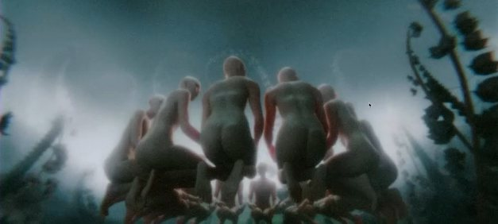
01Introduction Threshold
A circle of figures gathers in a misty fern forest. A short text sets out the idea: humans and flowers are both living, sensing beings.
VisitorReads, then presses 2 to begin.
-
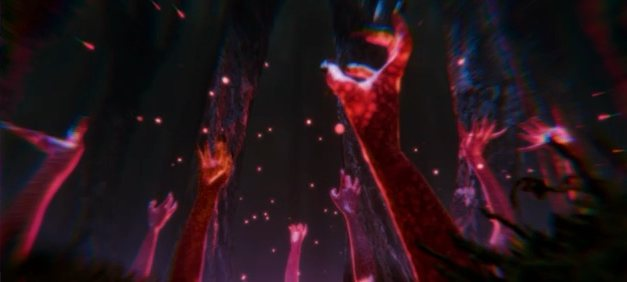
02Touch Hand sensor
Red hands push up through the forest floor like stems. The visual only grows while the visitor keeps touching; let go and it stops still.
VisitorHolds the sculpted hand sensor and moves their hand slowly.
-
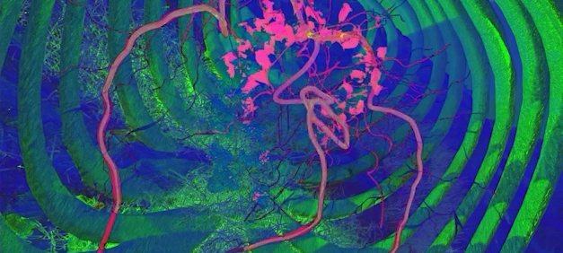
03Scent Breath
The stage stays dark until the visitor comes close. Breathing in the flowers opens a tunnel of rings with a blooming, vein-like body at its centre.
VisitorLeans over the flower box and takes a deep breath.
-
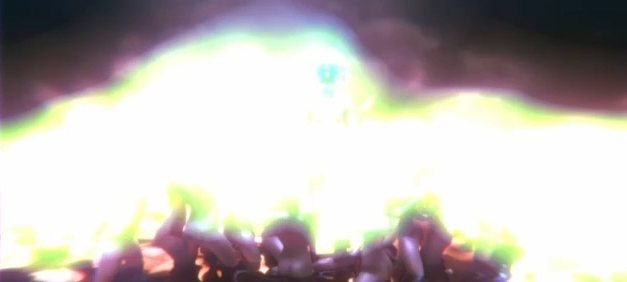
04Sight Voice & light
A crowd of bodies burns into white and green light. The scene answers to the visitor’s voice and to the light inside the flower box, which they can also cover with a hand.
VisitorSpeaks into the microphone or shines a flashlight on the light sensor inside the box.
-
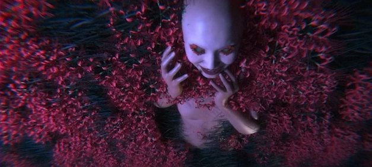
05Taste Holding
A figure surfaces from a bed of crimson petals, hands to its mouth. The scene plays out while the visitor holds a real flower.
VisitorPicks up a flower from the box and holds it.
-
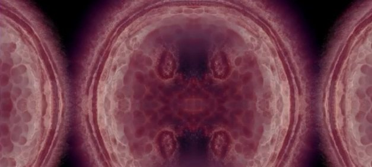
06Hearing Audio reactive
Mirrored, cell-like rings pulse with the sound in the room. Here the visitor does nothing at all: the visual listens on its own.
VisitorStands still and listens.
-
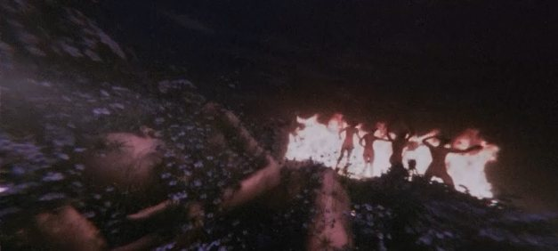
07Lying Down Rest
Bodies lie down among the flowers as fire glows at the edge of the forest. A slower passage between the senses and the end.
VisitorWatches, and moves on when ready.
-
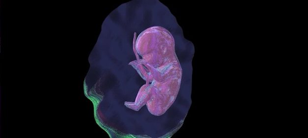
08Ending Return
A curled body rests inside a seed-like shell. Human and flower come back to the same beginning.
VisitorLeaves the room.
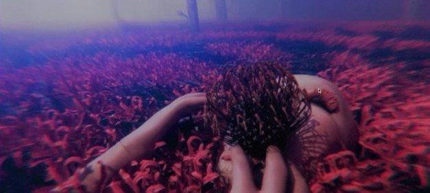
Hidden stages
Some senses go deeper.
Several stages hold a second, hidden scene. Pressing . reveals it, so a curious visitor can stay inside a sense for longer before moving on.
The installation
A room that grows
Moss covers the table, flowers climb the walls and red thread crosses overhead under violet light. A white sculpted hand holds the touch sensor, and a box of real flowers hides the scent and light sensors.
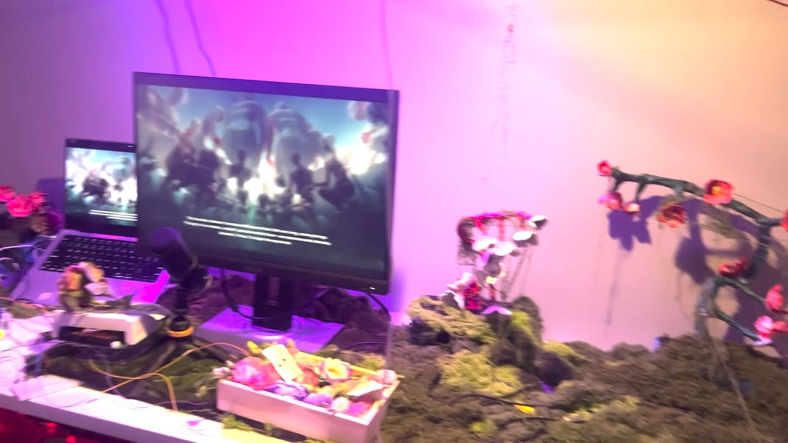
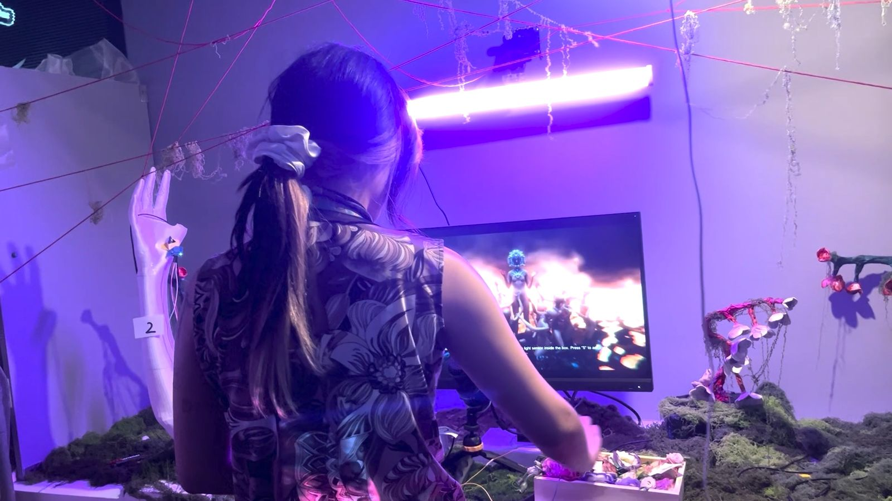
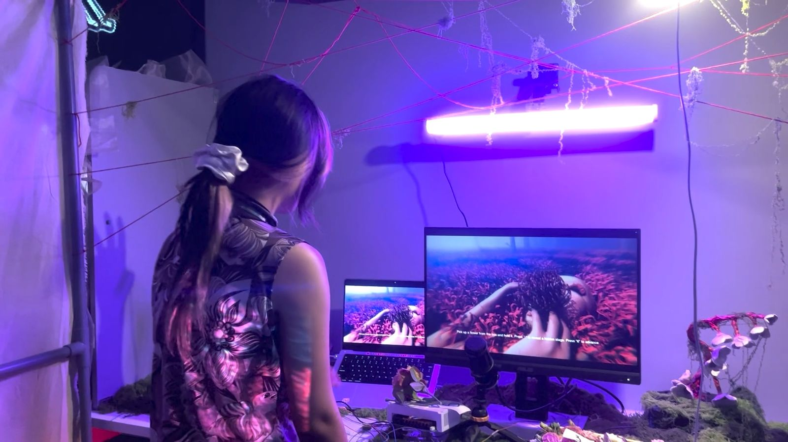
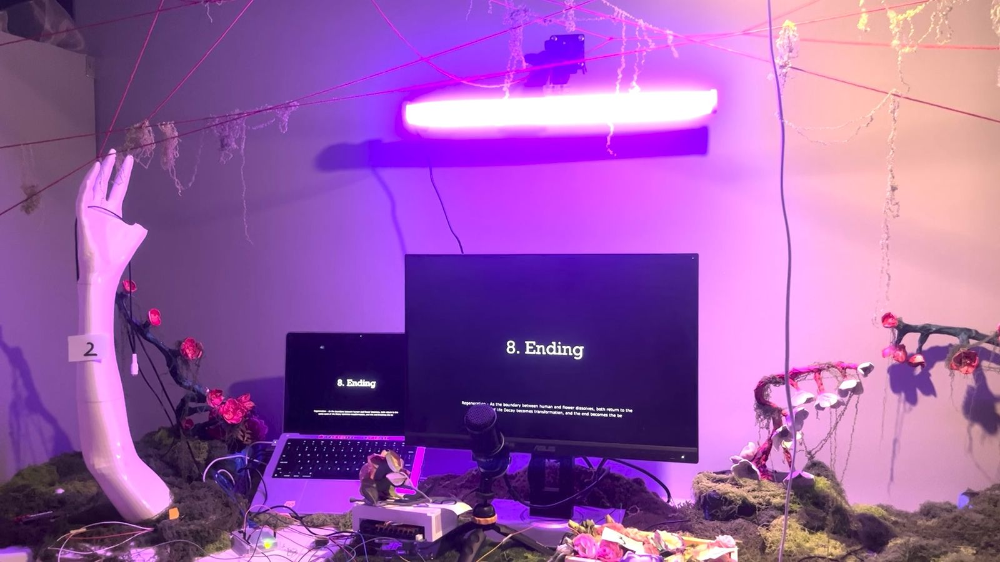
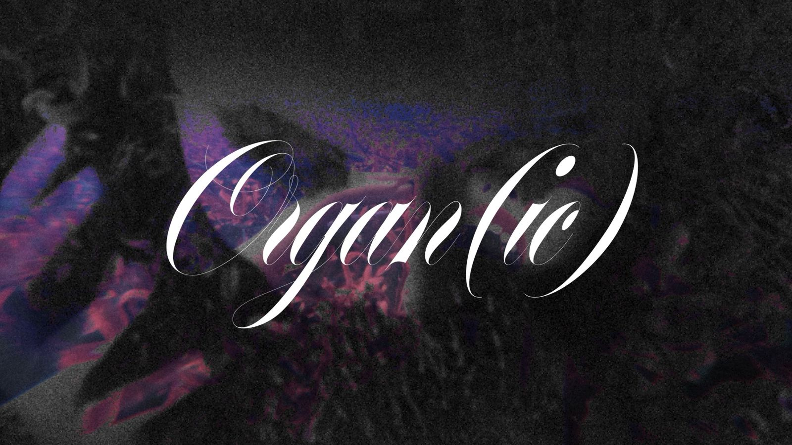
- TouchDesigner
- Real-time 3D
- Touch sensor
- Light sensor
- Microphone
- Live audio analysis
- Moss, flowers, thread
- Violet lights
Documentation
Walk through all eight stages
Print & key art
Poster and banner
A2 poster and 16:9 banner. A person surrounded by flowers, with a pancreas and alveoli in the background; hand-drawn letters spell the title around them.
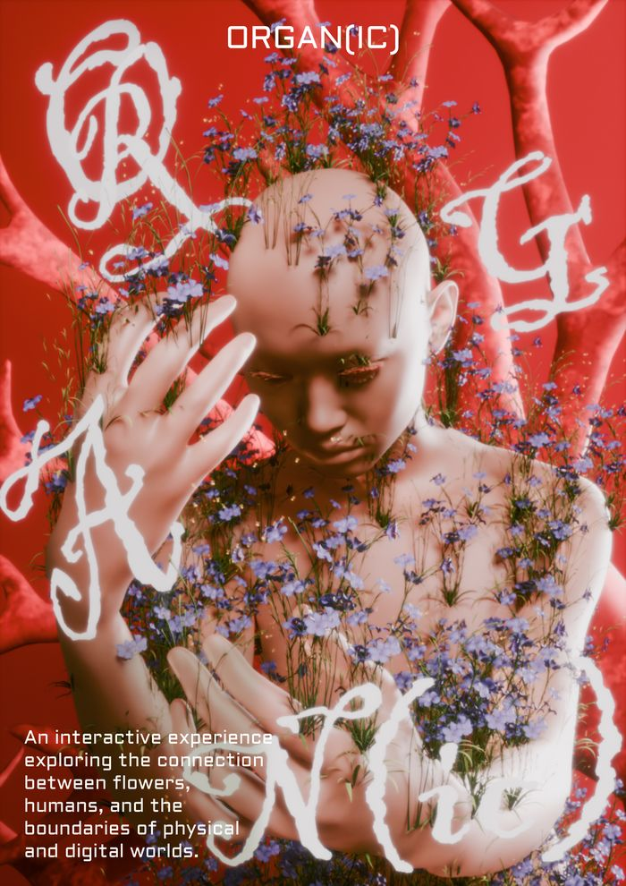
Visiting & setup
How it runs
A team member guides each visitor. Read the on-screen dialogue and wear headphones for the best experience.
For visitors
- Use the number pad, 1 to 8, to move between scenes.
- Interact with the sensors to explore each sense.
- Press . on some stages to open a hidden scene.
- Press 1 to return to the opening scene.
Equipment
- 1 screen or monitor, at least Full HD
- 1 projector, if available
- 1 Mac computer running TouchDesigner
- 1 USB microphone, for the voice sensor
- Tables, plinths and power
Content warning
Nudity, flashing lights, and intense visual effects that may cause eye strain or motion sickness.
Artists
Made by three
RMIT University Vietnam, Saigon South Campus · Vietnam
-
An Thuy Nguyen
An interactive storyteller working towards art direction and interactive installation, telling any story that carries a feeling, from a lost memory to a forced conscription.
Profile ↗ -
Hanh Minh Nguyen
A digital media student who enjoys exploring and experimenting with graphic design, website layout, magazines, 3D visuals, creative coding, and sound design. Photography for the poster and banner.
-
Anh Quynh Van
Co-creator of ORGAN(IC).
We don’t just observe the flower. We become it.